가상머신¶
Mold의 가상머신(Virtual Machine, VM) 메뉴는 클라우드 환경에서 가상머신을 생성, 관리 및 제어하는 기능을 제공합니다. 사용자는 원하는 인프라 환경에 맞춰 VM을 설정하고, 다양한 네트워크 및 스토리지 옵션을 적용할 수 있습니다.
목록 조회¶
가상머신의 목록을 확인하는 화면입니다.
생성된 가상머신 목록을 확인하거나 가상머신 추가버튼을 클릭하여 가상머신을 생성할 수 있습니다.
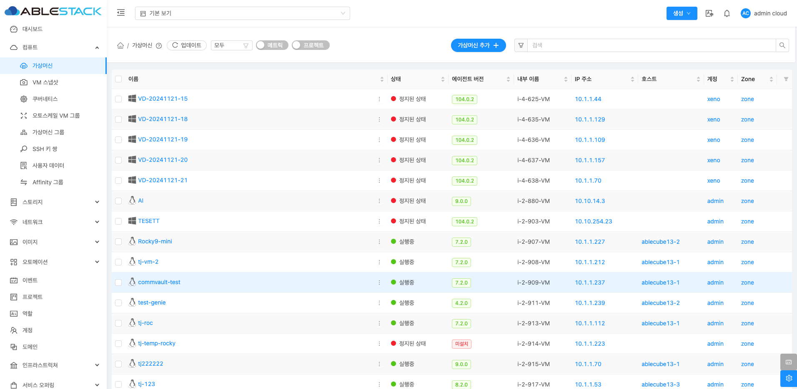
{kind=link}
가상머신 추가¶
가상머신 추가 버튼 클릭하여 새 가상머신 생성 화면을 호출합니다.
-
다른 계정에 가상머신 할당합니다. 새로 생성하는 VM을 특정 계정에 할당할 수 있습니다.
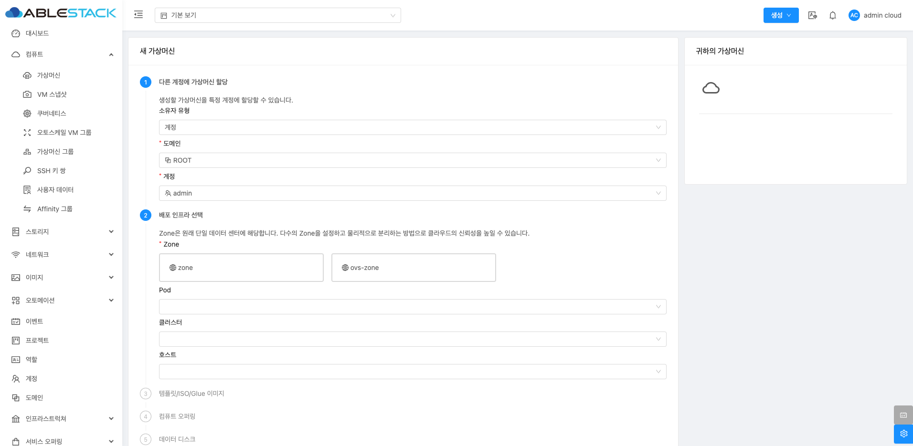
- 소유자 유형: VM을 할당할 계정의 유형을 지정합니다.
- 도메인: VM이 속할 도메인을 선택합니다.
- 계정: VM을 생성할 특정 계정을 선택합니다.
-
배포 인프라를 선택합니다. 가상머신이 배포될 클라우드 인프라를 설정하는 단계입니다.
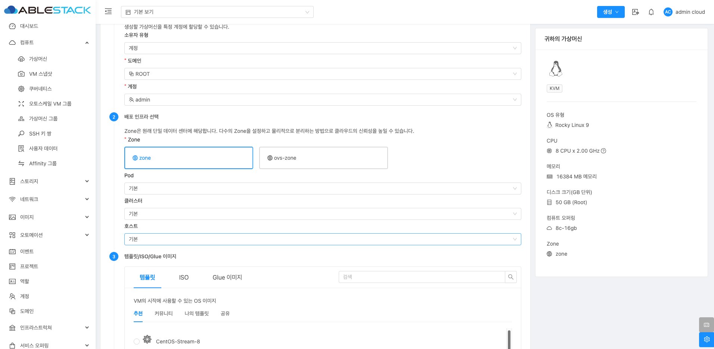
- Zone: Zone을 선택합니다.
- Pod: Zone 내에서 VM이 배포될 Pod를 선택합니다.
- 클러스터: Pod 내에서 VM을 실행할 클러스터를 선택합니다.
- 호스트: 클러스터 내에서 VM이 실행될 물리적 호스트를 선택합니다.
-
템플릿 또는 ISO 또는 Glue 이미지를 선택합니다. 가상머신을 배포할 때 사용할 OS 템플릿 또는 ISO 이미지를 선택합니다. "추천", "커뮤니티", "나의 템플릿", "공유" 등의 카테고리에서 선택할 수 있습니다.
- 템플릿: 템플릿: 미리 설정된 OS 이미지 중 하나를 선택합니다.
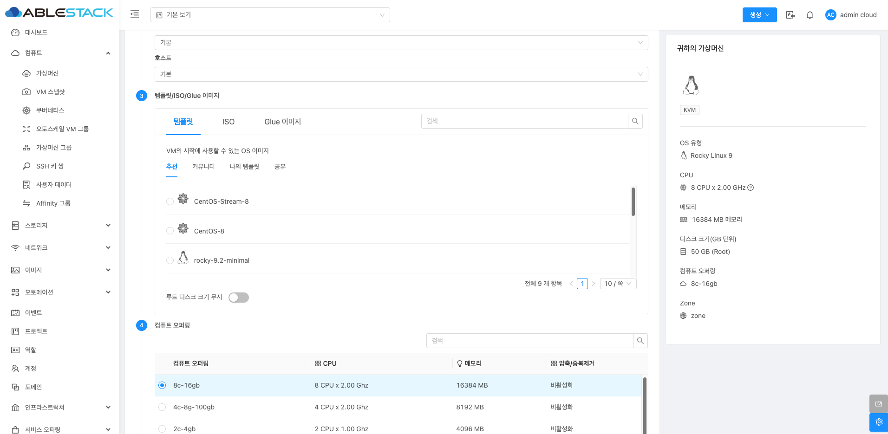
- ISO: 직접 OS 설치가 필요한 경우 ISO 파일을 선택하여 VM을 생성한 후 수동으로 OS를 설치할 수 있습니다.
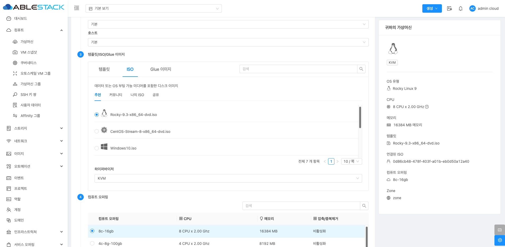
-
Glue 이미지: 볼륨을 복제하여 가상머신을 시작할 수 있는 Glue 이미지를 선택합니다.
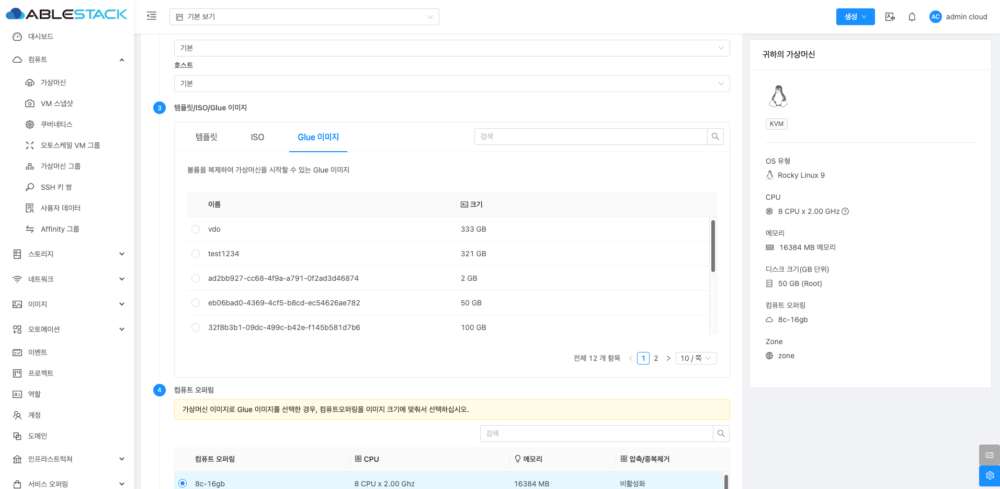
NOTE
가상머신 이미지로 Glue 이미지를 선택한 경우, 컴퓨트오퍼링의 디스크 크기를 이미지 크기에 맞춰서 선택하십시오.
- 템플릿: 템플릿: 미리 설정된 OS 이미지 중 하나를 선택합니다.
-
컴퓨트 오퍼링을 선택합니다. 미리 정의된 고정 컴퓨트 오퍼링 또는 사용자가 원하는 값을 직접 설정할 수 있는 커스텀 오퍼링을 선택할 수 있습니다.
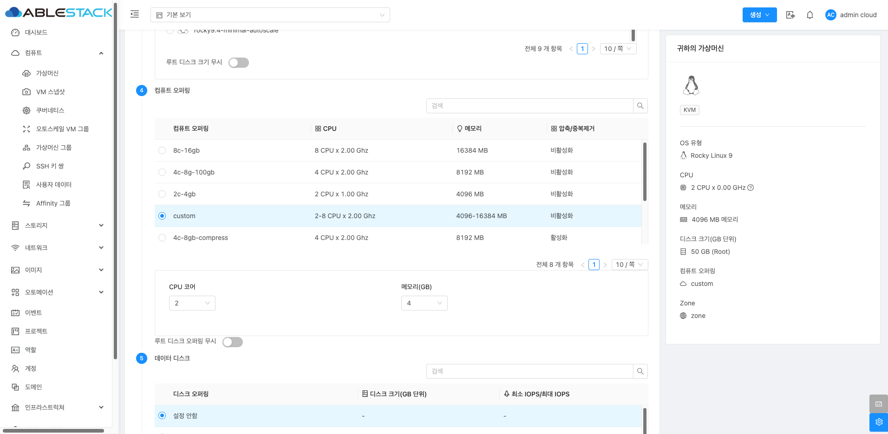
- 루트 디스크 오퍼링 무시: 활성화하면 기본 디스크 설정을 무시하고 별도로 디스크를 선택하고 용량을 변경할 수 있습니다.
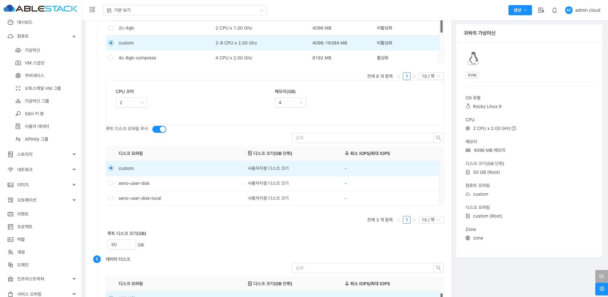
- 루트 디스크 오퍼링 무시: 활성화하면 기본 디스크 설정을 무시하고 별도로 디스크를 선택하고 용량을 변경할 수 있습니다.
-
데이터 디스크를 사용 유무를 선택합니다. 루트 디스크외에 추가적인 데이터 저장소가 필요하면 데이터 디스크를 추가할 수 있습니다.
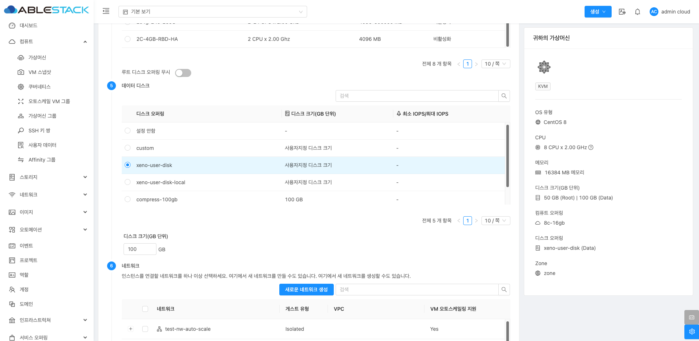
-
네트워크를 선택합니다. 기존 네트워크를 선택할 수도 있으며, "새로운 네트워크 생성" 버튼을 눌러 새로운 네트워크를 추가할 수도 있습니다. 사용자가 선택한 네트워크의 IP 주소 및 MAC 주소를 설정할 수 있으며 이 값은 기본적으로 자동 할당되고, 필요한 경우 수동으로 값을 입력할 수 있습니다.
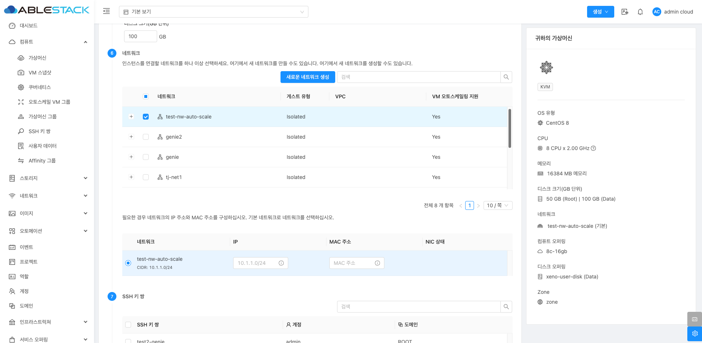
-
SSH 키 쌍을 선택합니다. SSH를 통해 가상머신에 접속하기 위한 키 쌍을 설정하는 단계입니다. 기존 키를 사용하거나 새 키를 생성할 수 있습니다.
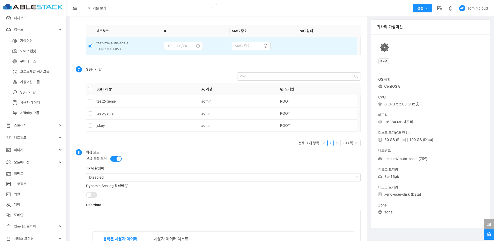
-
확장 모드를 선택합니다. 고급 기능을 사용하려면 확장 모드를 활성화해야 합니다.
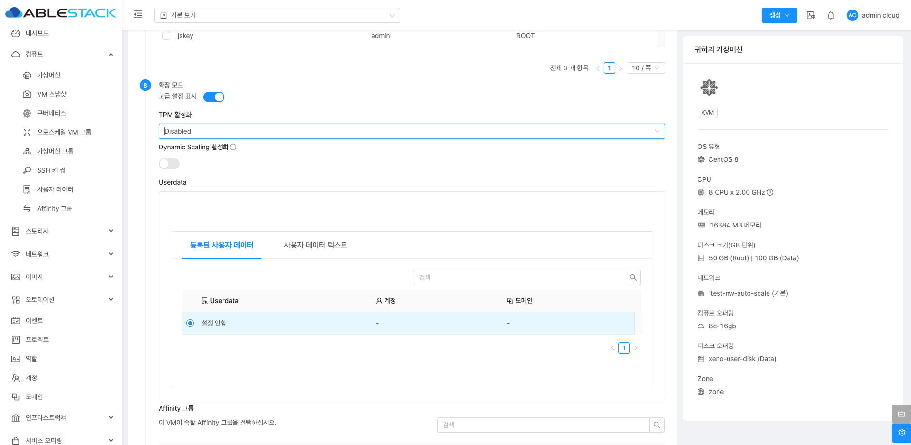
-
부팅 유형: VM이 부팅할 때 사용할 펌웨어 타입을 결정하는 설정입니다. 일반적으로 BIOS 또는 UEFI 중에서 선택할 수 있습니다.
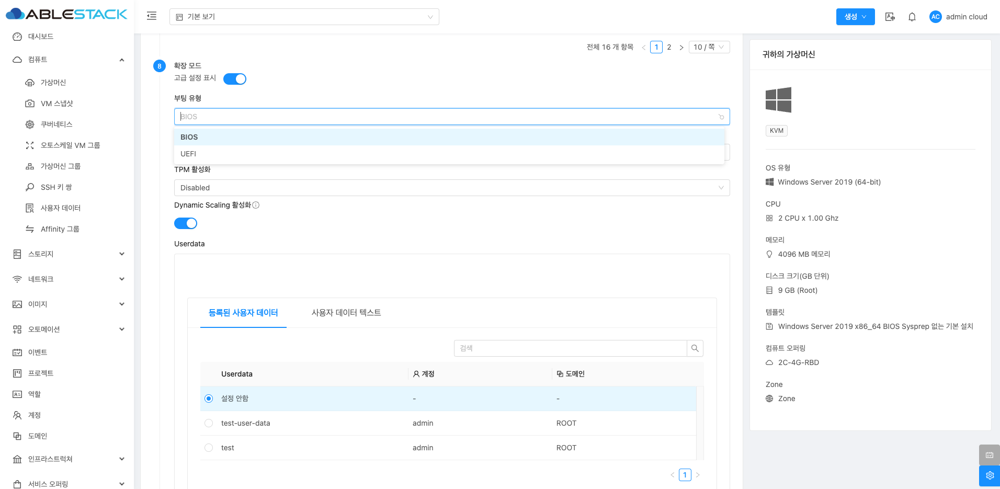
-
부팅 모드: 부팅 방식에 대한 추가 설정입니다.
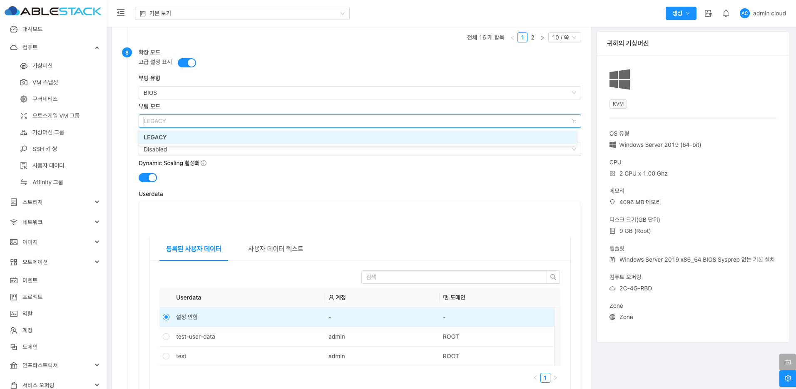
-
TPM 활성화 (Trusted Platform Module): 보안 칩을 이용하여 VM의 보안성을 강화할 수 있습니다.
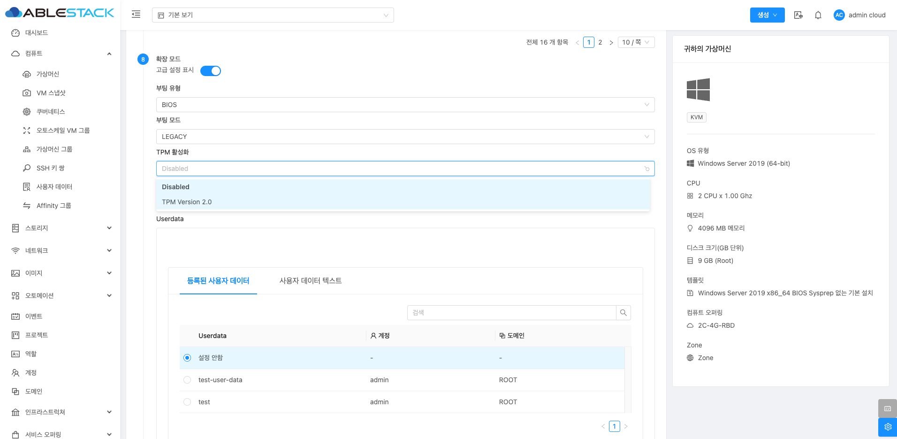
-
Dynamic Scaling 활성화: VM의 리소스를 동적으로 조정할 수 있도록 하는 기능입니다. 기본적으로 비활성화되어 있으며, 사용자가 필요할 경우 활성화할 수 있습니다.
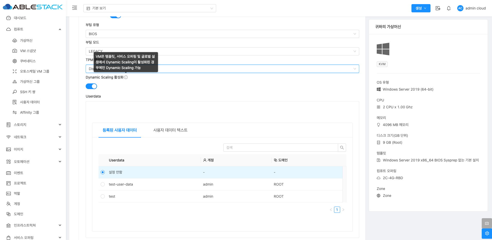
- 단, 이 기능을 활성화하려면 다음 조건이 필요합니다.
- VM 템플릿에서 Dynamic Scaling 지원
- 서비스 오퍼링에서 Dynamic Scaling 지원
- Mold 글로벌 설정에서 Dynamic Scaling 활성화
- 단, 이 기능을 활성화하려면 다음 조건이 필요합니다.
-
Userdata: 클라우드 초기화 과정에서 VM 내부에서 실행할 사용자 스크립트를 입력하거나 미리 설정된 사용자 데이터를 선택할 수 있습니다.
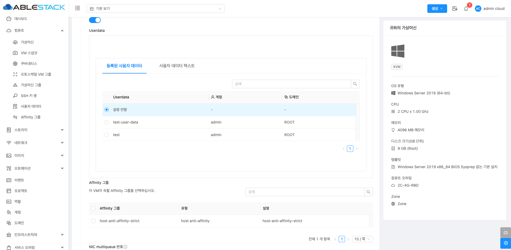
-
Affinity 그룹: VM이 특정 호스트에서 함께 실행되거나, 서로 다른 호스트에서 실행되도록 제어하는 기능입니다. 미리 생성된 Affinity 그룹을 선택할 수 있습니다.
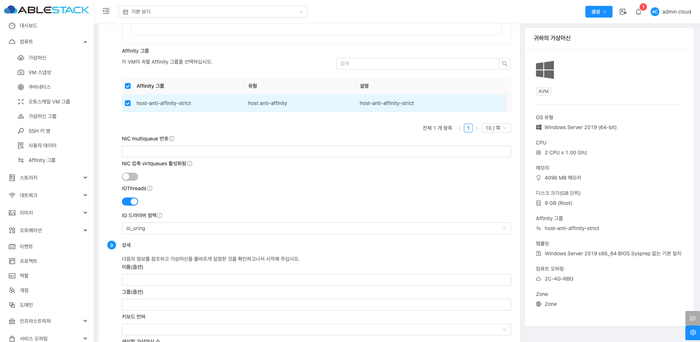
-
NIC Multiqueue: Multiqueue 기능은 여러 개의 큐를 사용하여 네트워크 트래픽을 분산 처리함으로써 VM의 네트워크 성능을 향상시키며, 일반적으로 vCPU 개수와 동일한 값으로 설정하는 것이 권장됩니다.
- NIC multiqueue 번호는 KVM에서만 지원되며, "-1" 값은 해당 번호가 인스턴스의 vCPU 개수로 설정됨을 의미합니다.
-
NIC 압축 Virtqueues: Virtio-Net 장치의 성능을 최적화하는 이 옵션은 Virtqueues(가상 큐)를 압축하여 메모리 사용량을 줄이고 성능을 향상시킵니다.
- 최신 Linux 커널 및 일부 최적화된 VM 환경에서 사용 가능합니다. QEMU >= 4.2.0 및 Libvirt >= 6.3.0인 KVM만 지원합니다.
-
IOThreads: VM의 디스크 및 네트워크 I/O 처리를 위한 스레드 수를 지정하는 이 옵션은 높은 I/O 부하가 예상되는 VM에서 성능 향상을 위해 IOThreads 수를 늘릴 수 있습니다.
-
IO 드라이버 정책: 클라우드 초기화 과정에서 VM 내부에서 실행할 사용자 스크립트를 입력하거나 미리 설정된 사용자 데이터를 선택할 수 있습니다.
- IO 드라이버 정책은 기본(default), io_uring, 스레드(thread) 중에서 선택할 수 있으며, 스토리지 풀 옵션 'kvm.storage.pool.io.policy'가 설정된 경우(사용 가능 시) 이를 재정의할 수 있습니다.
-
-
가상머신을 생성하기 전에 아래 항목을 확인하고 올바르게 설정하는 단계입니다.
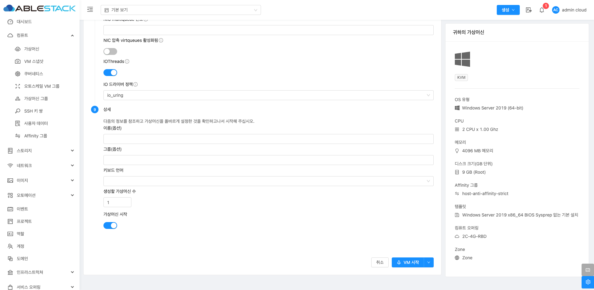
- 이름(옵션): 가상머신의 식별을 위해 고유한 이름을 지정할 수 있습니다. 이름을 입력하지 않으면 기본값이 자동으로 할당됩니다.
- 그룹(옵션): 가상머신을 특정 그룹에 할당하여 관리할 수 있습니다.
- 키보드 언어: VM에서 사용할 키보드 레이아웃을 선택합니다.
- 생성할 가상머신 수: 동시에 생성할 가상머신의 개수를 지정합니다. 여러 대의 VM을 한 번에 생성할 경우 동일한 설정이 적용됩니다.
- 가상머신 시작: VM 생성 후 즉시 부팅할지 여부를 선택합니다. 체크하면 VM이 자동으로 시작되며, 체크 해제 시 생성만 진행되고 수동으로 부팅해야 합니다.
{kind=link}
{kind=link}
{kind=link}
{kind=link}
{kind=link}
{kind=link}
{kind=link}
{kind=link}
{kind=link}
{kind=link}
{kind=link}
{kind=link}
{kind=link}
{kind=link}
{kind=link}
{kind=link}
{kind=link}
{kind=link}
가상머신 콘솔 보기¶
가상머신 상세 화면 오른쪽 상단의 콘솔 보기 버튼을 클릭하여 사용자가 가상 머신의 직접적인 화면을 통해 상호작용할 수 있도록 합니다.
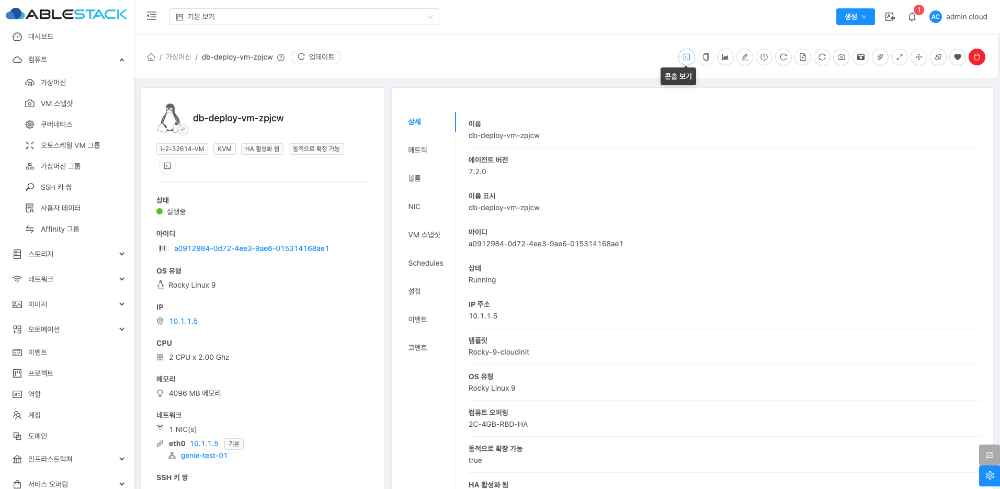 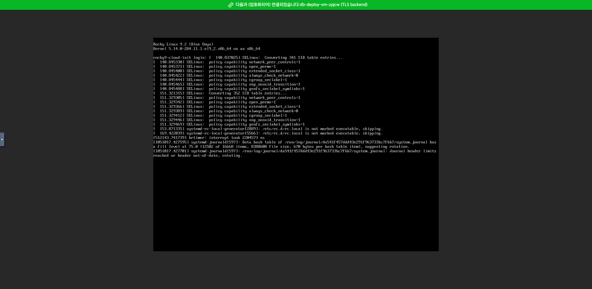
{kind=link}
{kind=link}
INFO
중지된 VM은 콘솔 보기 기능을 사용할 수 없습니다.
클립보드에 콘솔 URL 복사¶
가상머신 상세 화면 오른쪽 상단의 클립보드에 콘솔 URL 복사 버튼을 클릭하여 관리자는 클라우드 환경 내에서 가상 머신의 콘솔에 직접 접근할 수 있는 URL을 빠르게 복사하고 다른 도구나 시스템에서 사용할 수 있습니다.
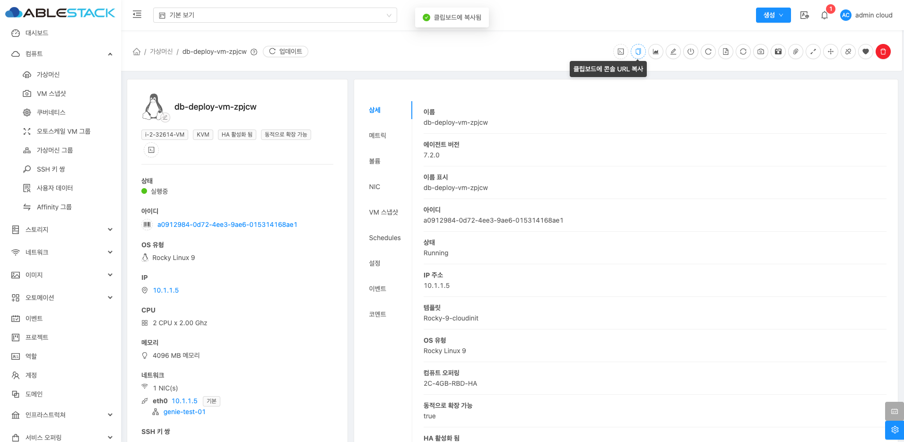
{kind=link}
가상머신 실시간 모니터링 연결¶
가상머신 상세 화면 오른쪽 상단의 실시간 모니터링 연결 버튼을 클릭하여 사용자가 가상 머신 리소스에 대한 실시간 성능 데이터를 모니터링할 수 있는 기능입니다. 이를 통해 사용자는 가상 머신의 상태, 네트워크 트래픽, CPU 사용량, 메모리 사용량 등을 실시간으로 확인하고, 문제를 신속하게 진단할 수 있습니다.
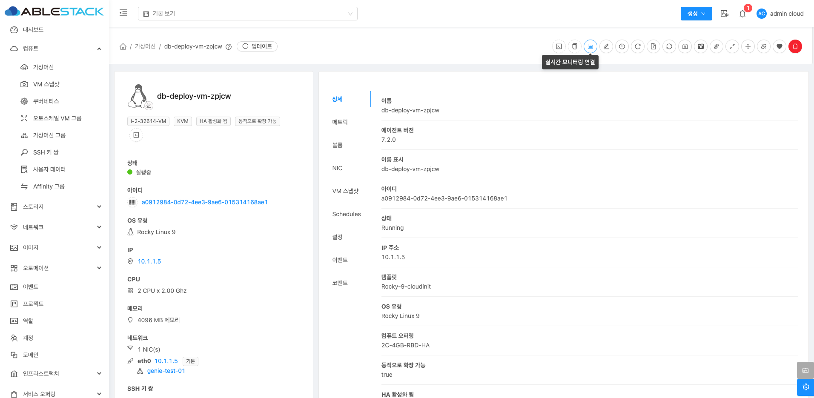 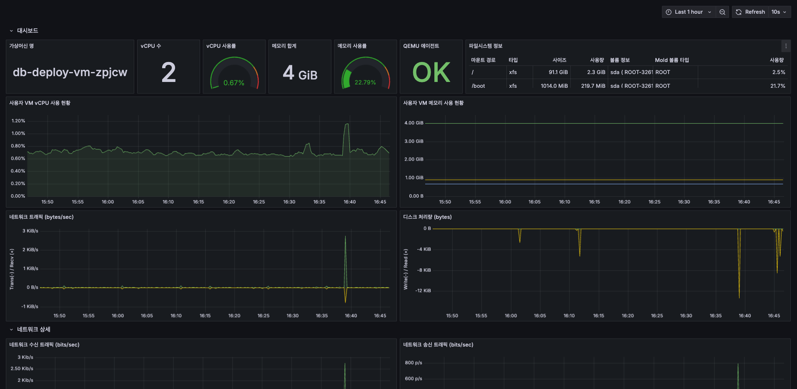
{kind=link}
{kind=link}
가상머신 편집¶
가상머신 상세 화면 오른쪽 상단의 편집 버튼을 클릭하여 기존에 생성된 가상 머신의 속성을 수정할 수 있습니다.
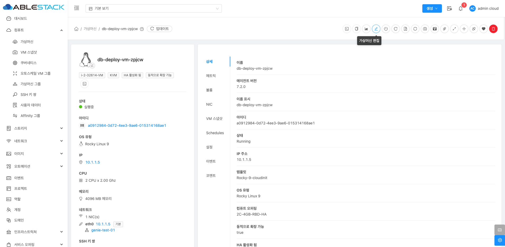 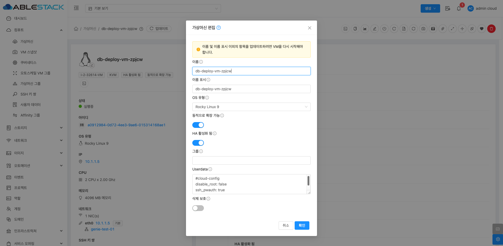
{kind=link}
{kind=link}
INFO
이름 및 이름 표시 이외의 항목을 업데이트하려면 VM을 다시 시작해야 합니다.
- 이름: 가상 머신의 이름을 수정할 수 있습니다.
- 이름 표시: 가상 머신의 이름 표시를 수정할 수 있습니다.
- OS 유형: 가상 머신에 설치된 OS 유형을 변경할 수 있습니다.
- 동적으로 확장 가능: 가상 머신(VM)의 CPU 및 메모리 리소스를 동적으로 확장할 수 있도록 지원하는 기능입니다. 이 기능은 가상 머신이 XS/VMware Tools를 포함하고 있을 때 활성화되며, 이를 통해 가상 머신의 리소스를 필요에 따라 실시간으로 확장하거나 축소할 수 있습니다.
- HA(High Availability) 활성화: HA 활성화를 설정하여 고가용성 기능을 사용할 수 있습니다.
- 그룹: 가상 머신을 특정 그룹에 할당할 수 있습니다. 그룹을 통해 관련된 가상 머신들을 관리할 수 있습니다.
- Userdata: 가상 머신의 주로 초기 설정 및 스크립트 실행에 사용되는 Userdata를 설정할 수 있습니다.
- 삭제 보호: 삭제 보호를 활성화하여, 해당 가상 머신이 실수로 삭제되지 않도록 보호할 수 있습니다.
- 삭제 보호 활성화: 삭제 보호를 활성화하면, 해당 가상 머신은 삭제 시도가 있더라도 보호됩니다. 사용자는 명시적으로 삭제 명령을 실행하거나, 보호 기능을 비활성화해야만 삭제가 가능합니다.
- 만약 가상 머신이 자동 확장 그룹(autoscaling groups)이나 Cloud Kubernetes Service (CKS)와 같은 다른 서비스에 의해 관리되고 있다면, 삭제 보호 기능은 무시될 수 있습니다. 이러한 서비스들은 가상 머신의 생애 주기를 관리하며, 자동으로 가상 머신을 생성하거나 삭제할 수 있기 때문에 삭제 보호 기능이 적용되지 않습니다.
가상머신 시작 (가상머신 정지 시 활성화)¶
가상머신 상세 화면 오른쪽 상단의 시작 버튼을 클릭하여 정지되었던 가상 머신을 시작할 수 있습니다.
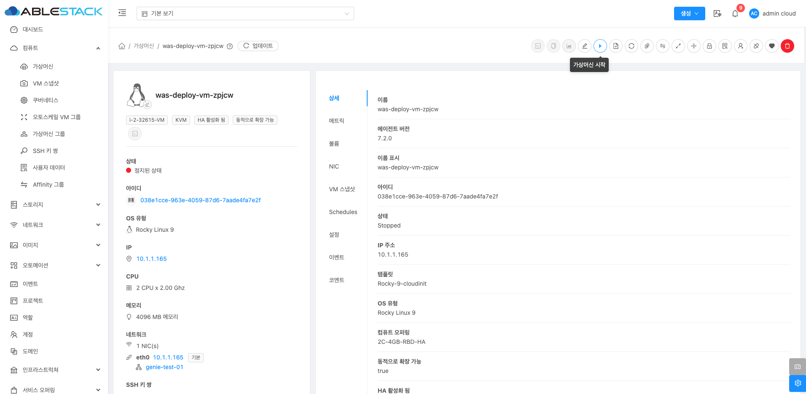 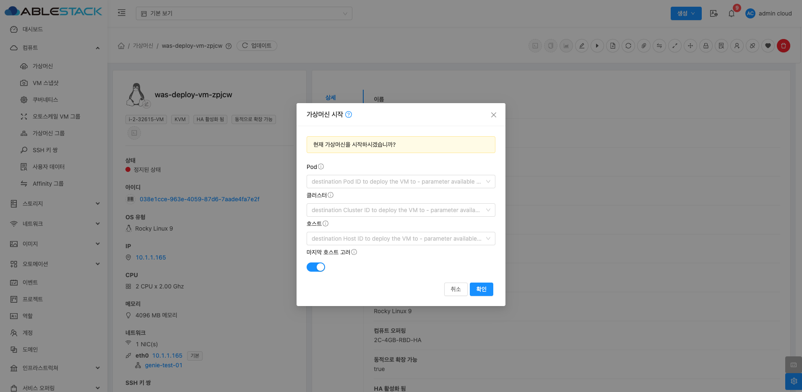
{kind=link}
{kind=link}
- Pod: 가상 머신을 배포할 Pod를 선택합니다.
- 클러스터: 가상 머신을 배포할 클러스터를 선택합니다.
- 호스트: 가상 머신을 배포할 호스트를 선택합니다.
- 마지막 호스트 고려: 가상 머신이 마지막에 실행된 호스트에 자동으로 배포됩니다. 이 기능은 VM이 특정 호스트에서 계속 실행되도록 보장할 수 있습니다.
가상머신 정지¶
가상머신 상세 화면 오른쪽 상단의 정지 버튼을 클릭하여 가상 머신을 정지할 수 있습니다. 가상 머신에 대한 리소스는 해제되지 않지만, CPU 및 메모리 자원은 소모되지 않습니다. 또한 가상 머신이 정상적으로 정지되지 않았거나, 정지 명령이 백엔드에 전송되지 않는 경우, 강제 정지 기능을 사용할 수 있습니다.
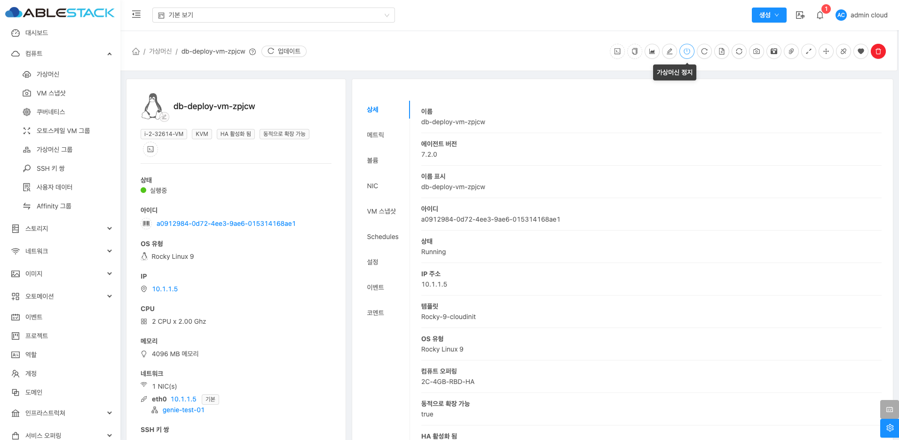 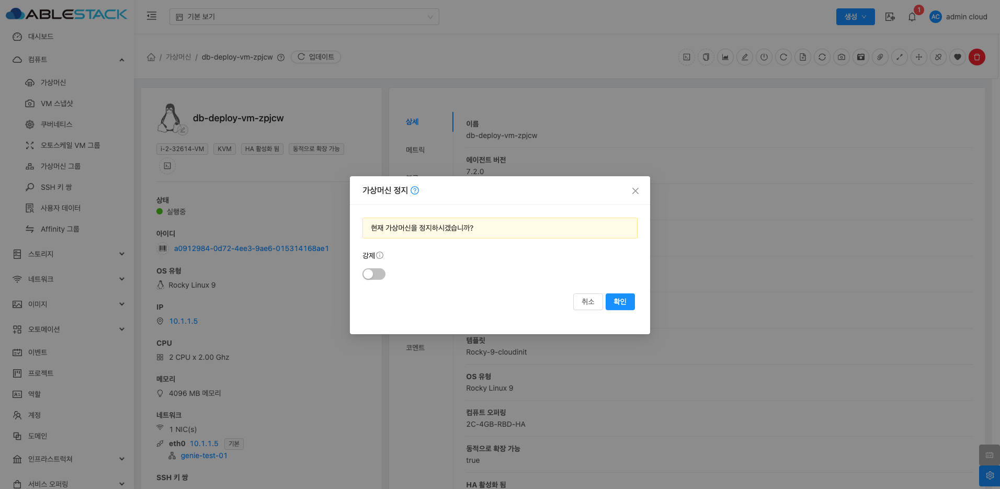
{kind=link}
{kind=link}
WARN
- 정지 후 재시작: 정지된 가상 머신은 자동으로 재시작되지 않습니다. 수동으로 재시작해야 다시 사용할 수 있습니다.
- 서비스 중단: 가상 머신을 정지하면 서비스나 애플리케이션이 중단될 수 있습니다.
- 강제 정지: 해당 기능은 정상적인 정지가 실패한 경우에만 사용하는 것이 권장되며, 가상 머신에 실행 중인 서비스나 애플리케이션에 영향을 미칠 수 있습니다.
가상머신 재시작¶
가상머신 상세 화면 오른쪽 상단의 재시작 버튼을 클릭하여 사용자가 가상 머신을 종료한 후 다시 시작하여, 변경된 설정을 적용하거나 시스템을 초기화하는 데 사용할 수 있습니다.
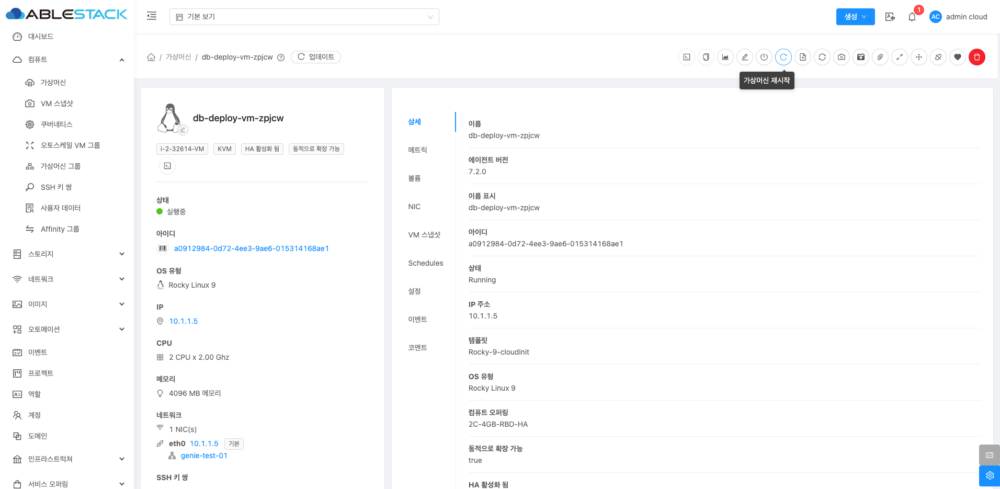
{kind=link}
{kind=link}
WARN
- 서비스 중단: 연결된 서비스나 애플리케이션이 일시적으로 중단될 수 있습니다.
- 강제 재시작: 가상 머신이 정상적으로 재시작되지 않거나 응답하지 않는 경우, 강제 재시작(Force Restart) 옵션을 사용할 수 있습니다. 가상 머신의 상태와 관계없이 강제로 재시작을 시도하며, 이때 시스템이나 데이터 손상이 발생할 수 있습니다.
가상머신 복제¶
가상머신 상세 화면 오른쪽 상단의 가상 머신 복제 버튼을 클릭하여 기존의 가상 머신을 기반으로 새로운 가상 머신을 생성합니다. 이 기능은 특히 여러 개의 동일한 설정을 가진 가상 머신을 빠르게 배포해야 할 때 유용합니다.
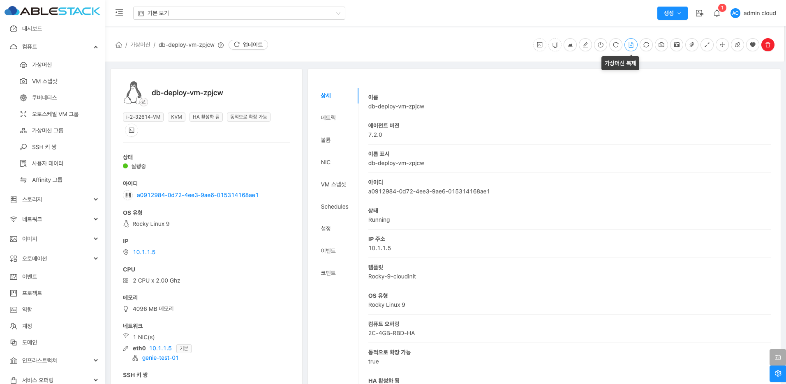 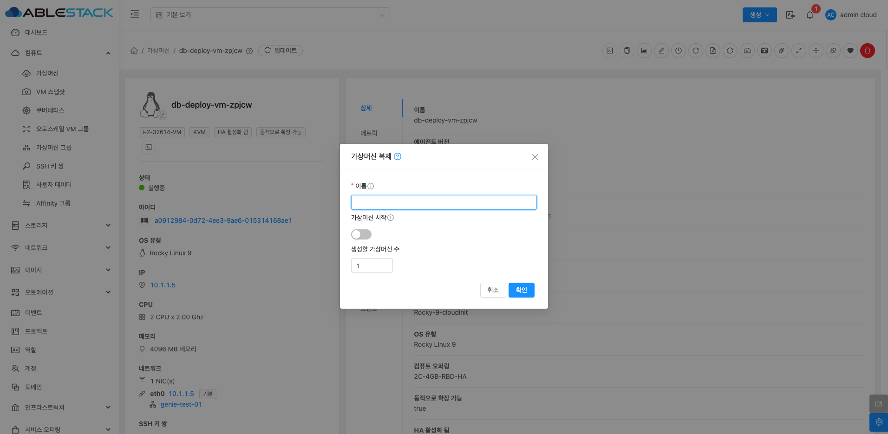
{kind=link}
{kind=link}
- 이름: 복제할 가상 머신의 이름을 입력합니다.
- 가상머신 시작: VM 생성 후 즉시 부팅할지 여부를 선택합니다. 체크하면 VM이 자동으로 시작되며, 체크 해제 시 생성만 진행되고 수동으로 부팅해야 합니다.
- 생성할 가상머신 수: 동시에 생성할 가상머신의 개수를 지정합니다. 여러 대의 VM을 한 번에 생성할 경우 동일한 설정이 적용됩니다.
VM 재설치¶
가상머신 상세 화면 오른쪽 상단의 VM 재설치 버튼을 클릭하여 사용자가 가상 머신의 운영 체제를 새로 설치하는 작업입니다.
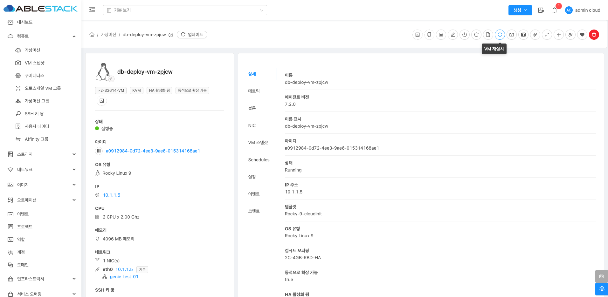 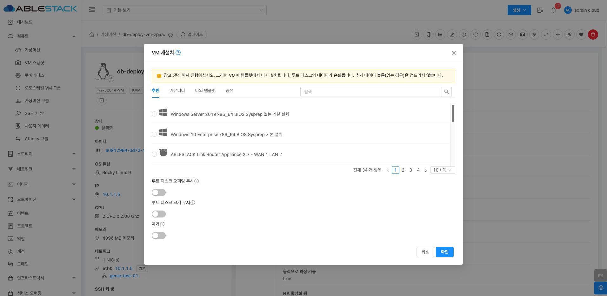
{kind=link}
{kind=link}
- 템플릿 선택: 재설치할 가상머신의 템플릿을 선택합니다.
- 루트 디스크 오퍼링 무시: VM 생성 후 즉시 부팅할지 여부를 선택합니다. 체크하면 VM이 자동으로 시작되며, 체크 해제 시 생성만 진행되고 수동으로 부팅해야 합니다.
- 루트 디스크 크기 무시: 루트 디스크의 크기를 기본값에서 변경하여, 원하는 크기로 설정할 수 있습니다.
- 제거: 재설치 후 이전의 루트 볼륨을 완전히 삭제하고 새로 설정된 운영 체제나 템플릿을 적용하려는 경우 사용됩니다. 기존 루트 디스크에 남아 있는 데이터나 설정을 완전히 초기화하고 싶을 경우 이 옵션을 사용합니다.
WARN
가상 머신 재설치 시, 기존의 루트 디스크의 데이터가 모두 삭제되고 새롭게 운영 체제가 설치됩니다.
VM 스냅샷 생성¶
가상머신 상세 화면 오른쪽 상단의 VM 스냅샷 생성 버튼을 클릭하여 가상 머신의 현재 상태를 저장하여 이후 특정 시점으로 복원할 수 있도록 할 수 있습니다. 이 기능을 사용하면 운영 체제, 애플리케이션, 데이터 및 메모리 상태를 포함한 VM의 전체 상태를 캡처할 수 있습니다.
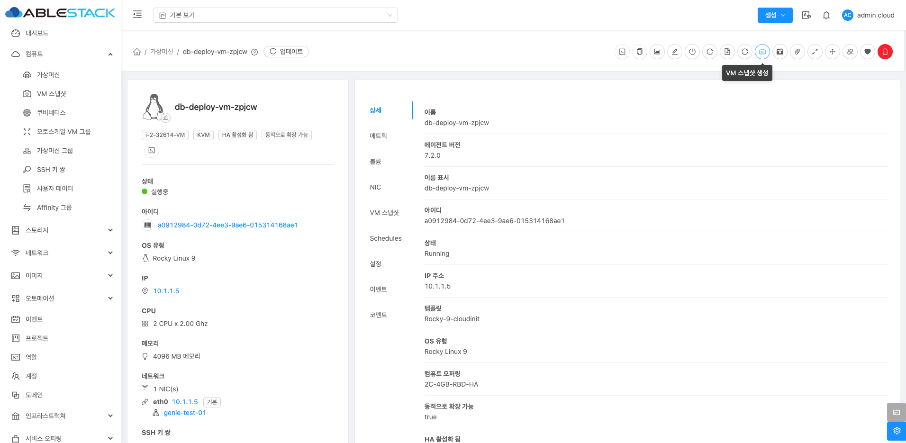 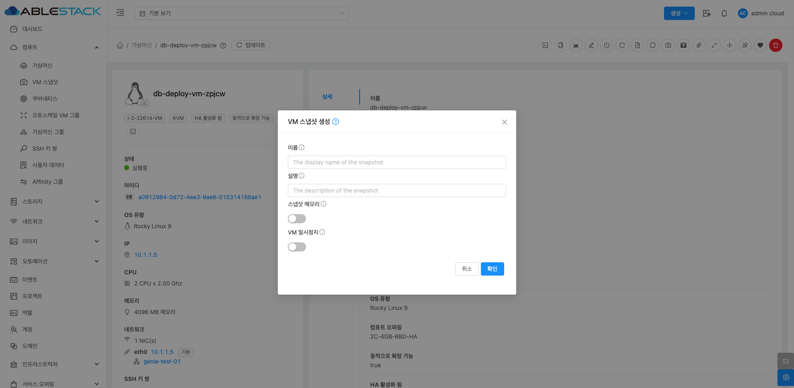
{kind=link}
{kind=link}
- 이름: VM 스냅샷의 이름을 입력합니다.
- 설명: VM 스냅샷에 대한 추가 정보를 입력합니다.
- 스냅샷 메모리: 이 옵션을 선택하면 VM의 현재 메모리 상태를 포함한 스냅샷이 생성됩니다. 이를 통해 VM이 실행 중이던 상태 그대로 복원할 수 있습니다.
- VM 일시정지: 스냅샷 생성 시 VM을 일시정지하여 데이터 일관성을 보장할 수 있습니다. 특히, 데이터베이스와 같이 높은 일관성이 필요한 애플리케이션이 실행 중인 경우 유용합니다.
VM 볼륨 스냅샷 생성¶
가상머신 상세 화면 오른쪽 상단의 VM 볼륨 스냅샷 생성 버튼을 클릭하여 사용자가 특정 시점의 VM 디스크 상태를 캡처하여 백업하거나 복구합니다. 이 기능은 VM의 디스크 볼륨을 대상으로 하며, 메모리나 CPU 상태는 포함하지 않습니다.
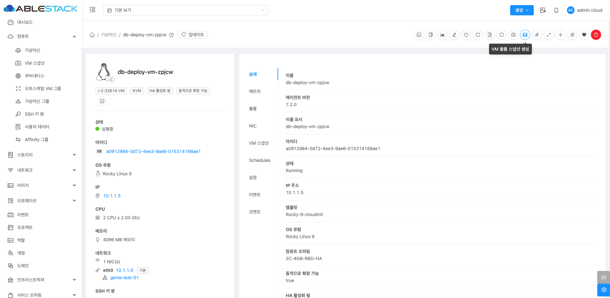 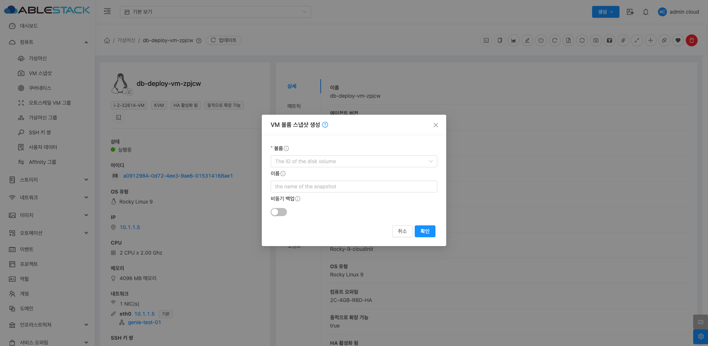
{kind=link}
{kind=link}
- 볼륨: 스냅샷을 생성하려는 디스크 볼륨을 선택합니다.
- 이름: VM 볼륨 스냅샷의 이름을 입력합니다.
- 스냅샷 메모리: 스냅샷 생성 작업을 비동기적으로 수행할지 여부를 결정합니다. 비동기 백업을 활성화하면 스냅샷 생성 요청이 즉시 반환되며, 백그라운드에서 스냅샷 생성이 진행됩니다. 이를 통해 사용자 인터페이스의 응답성을 유지할 수 있습니다.
백업 시작 (가상머신 백업 오퍼링 할당 시 활성화)¶
가상머신 상세 화면 오른쪽 상단의 백업 시작 버튼을 클릭하여 해당 가상머신을 백업합니다.
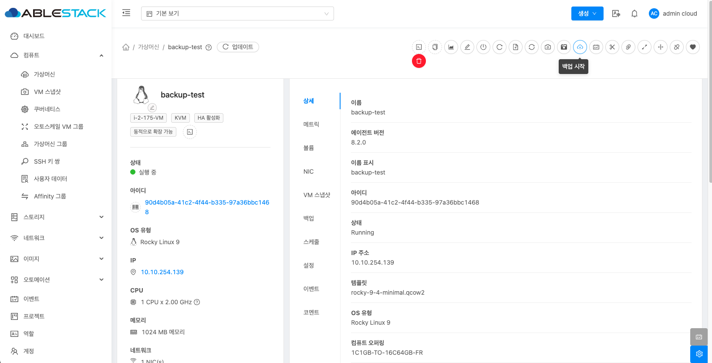 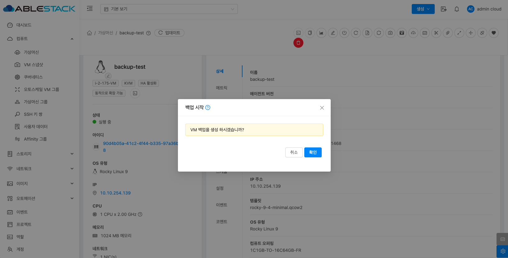
{kind=link}
{kind=link}
백업 스케줄 구성 (가상머신 백업 오퍼링 할당 시 활성화)¶
가상머신 상세 화면 오른쪽 상단의 백업 스케줄 구성 버튼을 클릭하여 해당 가상머신에 백업 스케줄을 구성합니다.
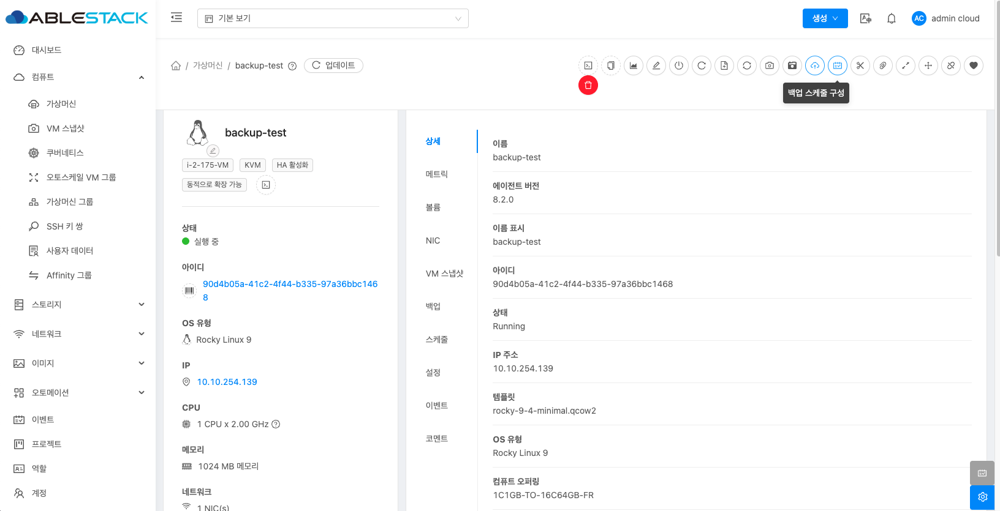 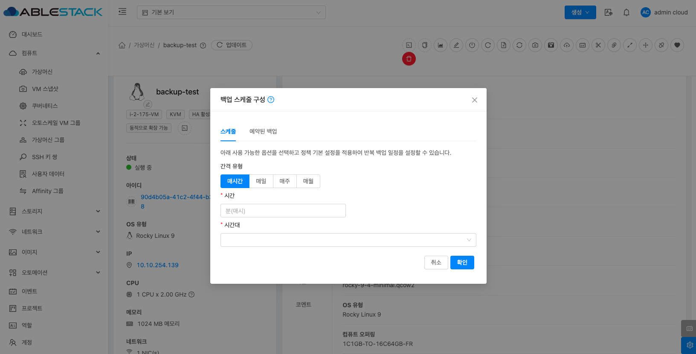
{kind=link}
{kind=link}
INFO
가상머신은 한 개의 백업 스케줄만 설정이 가능합니다.
- 스케줄: 매시간, 매일, 매주, 매월 유형으로 스케줄을 설정할 수 있습니다.
- 예약된 백업: 예약된 백업 스케줄을 표시하며, 삭제 버튼을 클릭하여 예약된 백업을 삭제할 수 있습니다.
가상머신에 백업 오퍼링 할당¶
가상머신 상세 화면 오른쪽 상단의 가상머신에 백업 오퍼링 할당 버튼을 클릭하여 해당 가상머신에 백업 오퍼링을 할당합니다.
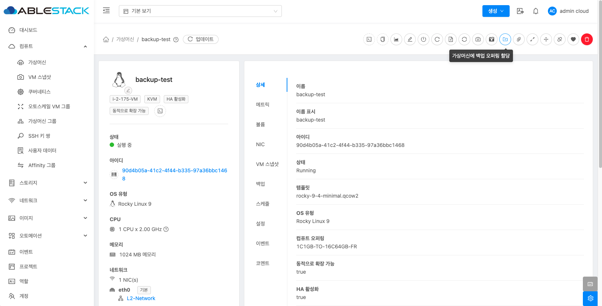 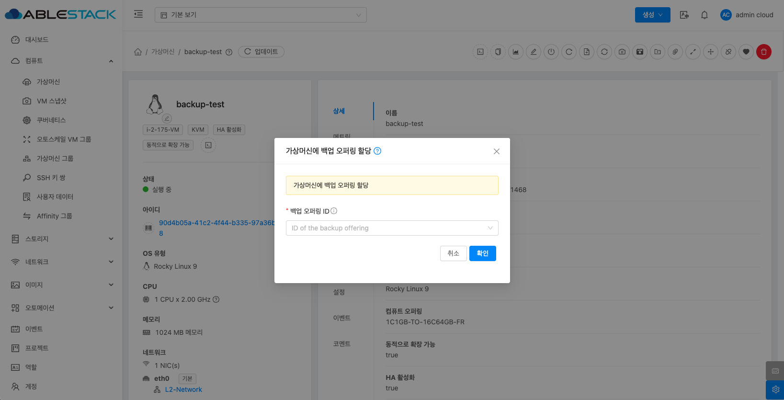
{kind=link}
{kind=link}
- 백업 오퍼링 ID: 가상머신에 할당하려는 백업 오퍼링을 선택합니다.
INFO
- 글로벌 설정에서
backup.framework.enabled값을true로 설정하여 가상머신에 백업 오퍼링 할당 기능을 활성화 할 수 있으며, 사전에 서비스 오퍼링의 백업 오퍼링 메뉴에서 백업 오퍼링 가져오기를 실행해야 합니다.
가상머신에 백업 오퍼링 제거 (가상머신 백업 오퍼링 할당 시 활성화)¶
가상머신 상세 화면 오른쪽 상단의 가상머신에 백업 오퍼링 제거 버튼을 클릭하여 해당 가상머신에 백업 오퍼링을 제거합니다.
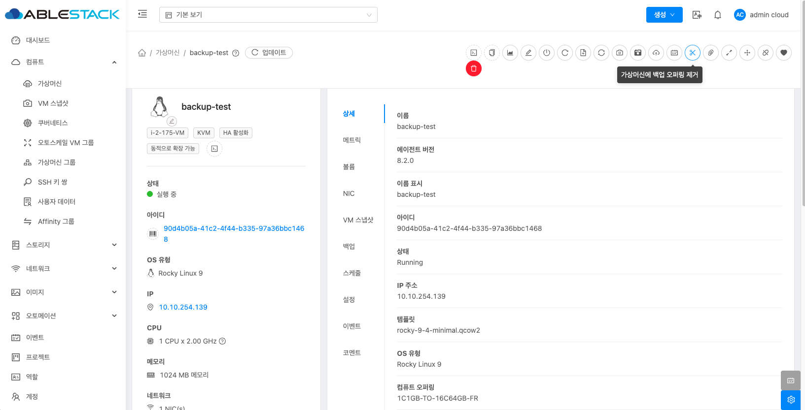 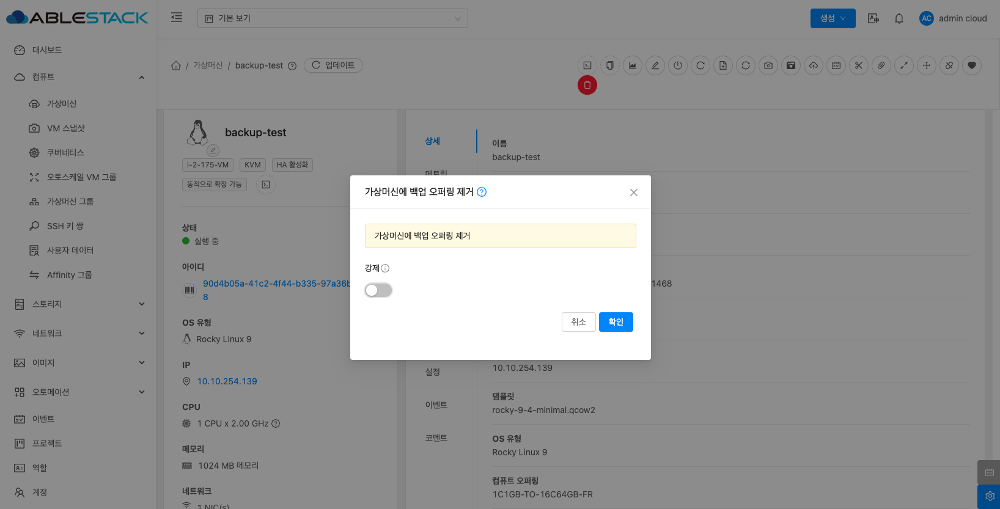
{kind=link}
{kind=link}
WARN
- 강제: 체크 시 가상머신의 백업도 함께 삭제됩니다.
가상머신 ISO 연결¶
가상머신 상세 화면 오른쪽 상단의 ISO 연결 버튼을 클릭하여 사용자가 운영체제 설치, 소프트웨어 추가, 드라이버 업데이트 등 다양한 작업을 수행할 수 있도록 합니다.
INFO
연결된 이미지가 없는 상태에서 해당 기능 사용이 가능합니다.
{kind=link}
{kind=link}
- ISO 이름: 등록된 ISO 목록에서 원하는 이미지를 선택한 후 '확인'을 클릭합니다.
ISO 분리¶
가상머신 상세 화면 오른쪽 상단의 ISO 분리 버튼을 클릭하여 연결되었던 ISO를 연결 해제합니다.
INFO
이미지가 연결된 상태에서 해당 기능 사용이 가능합니다.
{kind=link}
{kind=link}
VM 확장¶
가상머신 상세 화면 오른쪽 상단의 VM 확장 버튼을 클릭하여 CPU와 메모리(RAM) 리소스를 조정할 수 있습니다. VM이 실행 중이든 정지 상태이든 리소스 조정이 가능하지만, 각 경우에 따라 적용되는 절차와 제한 사항이 있습니다.
- VM이 정지 상태인 경우: VM이 정지된 상태에서는 CPU, 메모리 등 오퍼링 변경을 통해 자유롭게 조정할 수 있습니다. 이 경우, VM의 설정을 변경한 후 다시 시작하면 새로운 리소스 설정이 적용됩니다.
- VM이 실행 중인 경우: 동적 확장(Dynamic Scaling) 기능을 활용해야 합니다. 글로벌 설정과 컴퓨트 오퍼링에서 기능을 활성화한 후 사용할 수 있습니다.
INFO
- 글로벌 설정에서
enable.dynamic.scale.vm값을true로 설정하여 동적 확장 기능을 활성화 할 수 있습니다. - 실행 중인 VM이 고정 컴퓨팅 오퍼링을 사용하는 경우, KVM 하이퍼바이저를 활용하는 VM은 확장할 수 없습니다.
{kind=link}
{kind=link}
- 컴퓨트 오퍼링: 변경할 오퍼링을 선택합니다.
- 필요한 경우 볼륨을 다른 스토리지 풀로 자동 마이그레이션: 활성화하면 특정 조건에 따라 가상 머신의 데이터 저장소인 볼륨을 자동으로 다른 스토리지 풀로 이동시킵니다. 한 스토리지 풀에 저장된 볼륨이 과부하 상태일 경우, Mold는 자동으로 볼륨을 다른 스토리지 풀로 이전하여 시스템 안정성을 유지할 수 있습니다.
다른 기본 스토리지에 가상머신 마이그레이션 (가상머신 정지 시 활성화)¶
가상머신 상세 화면 오른쪽 상단의 시작 버튼을 클릭하여 정지되었던 가상 머신을 시작할 수 있습니다.
- Pod: 가상 머신을 배포할 Pod를 선택합니다.
- 클러스터: 가상 머신을 배포할 클러스터를 선택합니다.
- 호스트: 가상 머신을 배포할 호스트를 선택합니다.
- 마지막 호스트 고려: 가상 머신이 마지막에 실행된 호스트에 자동으로 배포됩니다. 이 기능은 VM이 특정 호스트에서 계속 실행되도록 보장할 수 있습니다.
SSH 키 쌍 재설정 (가상머신 정지 시 활성화)¶
가상머신 상세 화면 오른쪽 상단의 SSH 키 쌍 재설정 버튼을 클릭하여 기존에 설정된 SSH 키 쌍을 새로운 키로 교체할 수 있습니다.
WARN
SSH 키 쌍 재설정 후 새로 선택한 SSH 키로만 접근할 수 있습니다.
{kind=link}
{kind=link}
- SSH 키 쌍: 해당 VM에 변경할 SSH 키 쌍을 선택합니다.
VM에서 사용자 데이터 재설정 (가상머신 정지 시 활성화)¶
가상머신 상세 화면 오른쪽 상단의 VM에서 사용자 데이터 재설정 버튼을 클릭하여 가상머신의 초기 설정 정보(Userdata)를 필요에 따라 업데이트하거나 변경할 수 있습니다.
NOTE
- Userdata 재설정 후, 가상머신을 재부팅해야 변경 사항이 완전히 적용됩니다.
- 잘못된 Userdata 입력 시 가상머신이 정상적으로 동작하지 않을 수 있습니다.
{kind=link}
{kind=link}
다른 계정에 가상머신 할당 (가상머신 정지 시 활성화)¶
가상머신 상세 화면 오른쪽 상단의 다른 계정에 가상머신 할당 버튼을 클릭하여 가상머신의 특정 가상머신을 다른 사용자 또는 관리 계정으로 쉽게 이전할 수 있습니다.
INFO
- 대상 계정에서 가상머신 관리 권한과 접근 권한이 자동으로 활성화됩니다.
- 계정 간 할당 시 보안 그룹, 네트워크 설정 및 접근 정책 등 기존 설정이 변경되지 않고 그대로 유지됩니다
{kind=link}
{kind=link}
- 소유자 유형: 계정 또는 프로젝트를 선택합니다.
- 도메인: VM이 속할 도메인을 선택합니다.
- 계정: VM이 속할 계정을 선택합니다.
- 프로젝트: VM이 속할 프로젝트를 선택합니다.
- 네트워크: VM이 속할 네트워크를 선택합니다.
- 인스턴스의 기본 NIC가 서비스용 네트워크에 있으면 네트워크를 지정하지 않아도 됩니다. 이 경우 ABLESTACK에서 새 계정의 네트워크 사용 가능 여부를 자동으로 확인합니다.
- 기본 NIC가 격리된 네트워크에 있고 새 계정에 격리된 네트워크가 하나 이상 존재하는 경우에는 반드시 네트워크를 하나 지정해야 합니다.
다른 호스트에게 가상머신 마이그레이션¶
가상머신 상세 화면 오른쪽 상단의 다른 호스트에게 가상머신 마이그레이션 버튼을 클릭하여 가상 머신(VM)을 다른 호스트로 마이그레이션할 수 있습니다.
- VM이 정지 상태인 경우(Offline Migration): VM을 정지한 후, 디스크 이미지와 설정 파일을 다른 호스트로 이동합니다.
- VM이 실행 중인 경우(Live Migration): VM이 실행 중인 상태에서 메모리, CPU 상태 등을 실시간으로 다른 호스트로 이전합니다. 이를 통해 서비스 중단 없이 호스트의 유지 보수나 부하 분산을 수행할 수 있습니다.
{kind=link}
{kind=link}
{kind=link}
- 호스트 선택: 마이그레이션에 적합 판정이 된 호스트를 선택합니다.
- 적합성: 각 호스트에 대한 적합성 정보가 제공됩니다. 각 호스트의 CPU 사용률, 메모리 사용량, 할당된 메모리 등의 정보가 표시됩니다.
- CPU 사용률: 마이그레이션할 VM이 대상 호스트에서 원활하게 실행될 수 있도록 CPU 사용률이 낮은 호스트를 선택합니다.
- 메모리 사용량: 대상 호스트가 충분한 메모리를 보유하고 있어야 합니다.
- 스토리지 마이그레이션: 마이그레이션에 적합 판정이 된 호스트를 선택합니다.
- 스토리지 마이그레이션 필요 여부: 활성화 하면 스토리지 마이그레이션도 함께 진행됩니다.
- 볼륨 및 스토리지 정보: 예를 들어, ROOT-782 볼륨이 GlueBlock PS 스토리지에 저장되어 있고, 이를 "자동 할당"된 스토리지로 마이그레이션할 수 있습니다.
- "자동 할당" 대신 다른 스토리지를 변경하기 위해 "변경" 버튼을 눌러 선택합니다.
가상머신 관리 해제¶
가상머신 상세 화면 오른쪽 상단의 콘솔 보기 버튼을 클릭하여 가상머신 관리 해제를 할 수 있습니다. 특정 가상 머신을 Mold의 관리 대상에서 제외하여 이후 해당 VM을 Mold 외부의 도구나 플랫폼에서 직접 관리할 수 있도록 하는 기능입니다.
관리 해제된 가상머신은 인스턴스 가져오기-내보내기 메뉴에 비관리 인스턴스 항목에서 확인할 수 있습니다.
{kind=link}
{kind=link}
{kind=link}
VBMC 포트 할당¶
가상머신 상세 화면 오른쪽 상단의 VBMC 포트 할당 버튼을 클릭하여 해당 가상머신에 VBMC(Virtual Baseboard Management Controller) 포트를 할당합니다.
{kind=link}
{kind=link}
VBMC 포트 해제 (VBMC 할당 시 활성화)¶
가상머신 상세 화면 오른쪽 상단의 VBMC 포트 해제 버튼을 클릭하여 해당 가상머신에 VBMC(Virtual Baseboard Management Controller) 포트를 해제합니다.
{kind=link}
{kind=link}
가상머신 파기¶
가상머신 상세 화면 오른쪽 상단의 가상머신 파기 버튼을 클릭하여 가상 머신을 파기(Destroy)하고 제거(Expunge)할 수 있습니다.
{kind=link}
{kind=link}
-
제거(Expunge): 제거를 활성화 하면 VM과 관련된 모든 데이터를 Mold 데이터베이스에서 완전히 제거하는 작업을 수행합니다.
제거(Expunge) 작업을 수행할 경우 VM을 복구할 수 없습니다.
{kind=link}
-
삭제될 데이터 볼륨: 가상머신과 함께 삭제될 데이터 볼륨은 선택합니다.
선택된 데이터 볼륨은 영구적으로 삭제됩니다.
가상머신 상세 탭¶
가상머신에 대한 상세 정보를 확인하는 화면입니다. 가상머신의 상태, 설정 및 리소스 사용 정보를 포함하여 다양한 관리 기능을 제공합니다.
상세 탭에서 제공하는 주요 정보¶
- 상태: 가상머신의 현재 상태(예: 정지, 실행 중)를 나타냅니다.
- 에이전트 버전: QEMU Guest Agent version 정보입니다.
- 아이디: 가상머신의 고유 식별자입니다.
- OS 유형: 설치된 운영 체제의 종류를 표시합니다.
- IP 주소: 할당된 IP 주소를 표시합니다.
- CPU 및 메모리: 할당된 CPU 코어 수와 클럭 속도, 메모리 용량을 표시합니다.
- 네트워크: 가상머신의 네트워크 인터페이스(NIC) 정보와 연결된 네트워크를 표시합니다.
- SSH 키 쌍: 연결된 SSH 키 쌍 이름을 제공합니다.
- 템플릿: 가상머신를 생성할 때 사용된 템플릿의 이름을 표시합니다.
- 컴퓨트 오퍼링: 사용된 컴퓨트 오퍼링 이름을 표시합니다.
- Zone: 가상머신이 위치한 영역을 나타냅니다.
- 계정 및 도메인: 가상머신를 소유한 계정과 도메인을 표시합니다.
- 생성일 및 마지막 업데이트: 가상머신의 생성일과 최근 업데이트 날짜를 표시합니다.
{kind=link}
가상머신 메트릭 탭¶
메트릭 탭은 선택한 가상머신의 실시간 성능 정보를 시각적으로 제공합니다. 이를 통해 가상머신의 성능 상태를 빠르게 파악하고 리소스를 최적화할 수 있습니다.
{kind=link}
메트릭 탭에서 제공하는 주요 지표¶
- CPU 사용률
- 가상머신의 CPU 자원 사용 현황을 백분율(%)로 표시합니다.
- 가상머신에 여러 vCPU가 할당되었거나 CPU Cap이 비활성화된 경우, CPU 사용률이 100%를 초과할 수 있습니다.(하이퍼바이저 통계 계산 방식)
- 메모리 사용량
- 가상머신에 할당된 전체 메모리 대비 사용 중인 메모리 용량을 시각적으로 나타냅니다.
- 하이퍼바이저에서 메모리 데이터를 가져올 수 없거나, 추가 도구가 미설치된 경우, 실제 메모리 사용량과 차이가 있을 수 있습니다.
- 디스크
- 모든 디스크의 IOPS와 읽기/쓰기 트래픽 합산 데이터를 제공합니다.
- 각 데이터는 이전 데이터 이후 증가한 읽기/쓰기량을 나타냅니다.
- 네트워크 트래픽
- 모든 vNIC의 업로드/다운로드 데이터 합계를 표시합니다.
- 각 데이터는 이전 데이터 이후 증가한 네트워크 트래픽을 나타냅니다.
가상머신 볼륨 탭¶
볼륨 탭에서는 선택된 가상머신에 연결된 스토리지 볼륨 정보를 확인하거나 추가 볼륨을 생성 및 연결할 수 있습니다.
{kind=link}
볼륨 탭에서 제공하는 주요 정보 및 기능¶
- 이름: 볼륨의 고유 식별 이름을 표시합니다.
- 상태: 볼륨의 현재 상태(예: Ready, Allocated)를 나타냅니다.
- 유형: 볼륨 유형(ROOT 또는 DATA)을 구분하여 표시합니다.
- 크기: 볼륨의 할당된 용량을 표시합니다.
- 스토리지: 볼륨이 위치한 스토리지 풀 이름을 표시하며 클릭하면 상세 스토리지 정보 확인이 가능합니다.
볼륨 탭에서 볼륨 생성 및 추가 방법¶
{kind=link}
- 볼륨 생성 및 추가 버튼을 클릭합니다.
- 팝업창에서 다음 정보를 입력합니다.
- 소유자 유형: 계정 또는 프로젝트를 선택합니다.
- 도메인: 도메인을 선택합니다.
- 계정 계정을 선택합니다.
- 이름: 볼륨의 이름을 입력합니다.
- 디스크 오퍼링: 사용할 디스크 오퍼링 ID를 선택합니다. (디스크 오퍼링 ID와 스냅샷 ID 중 하나는 반드시 지정해야 합니다.)
- 크기: 볼륨의 크기를 설정합니다. 단위는 (GB)입니다.
- 모든 설정 입력 후 확인 버튼을 눌러 볼륨 생성을 완료합니다.
가상머신 NIC 탭¶
NIC 탭은 선택한 가상머신에 연결된 네트워크 인터페이스(NIC)의 상세 정보를 확인하고, 새 NIC을 추가하거나 기존 NIC을 관리할 수 있습니다.
{kind=link}
NIC 탭에서 제공하는 주요 정보¶
- 장치 ID: NIC의 고유 장치 식별 번호입니다.
- 네트워크 이름: NIC이 연결된 네트워크 이름을 표시합니다.
- MAC 주소: NIC의 MAC 주소를 나타냅니다.
- IP 주소: NIC에 할당된 IP 주소를 표시합니다.
- 넷마스크: 네트워크의 서브넷 마스크를 나타냅니다.
- 게이트웨이: NIC이 연결된 네트워크의 기본 게이트웨이 주소를 표시합니다.
NIC 탭에서 제공하는 상세 정보 및 기능¶
NIC 옆의 + 버튼을 누르면 상세 정보가 표시되고, 아래 세 가지 관리 기능이 제공됩니다.
- NIC 상태: NIC의 현재 상태(예: UP, DOWN)를 나타냅니다.
- 아이디: NIC의 고유 식별자입니다.
- 네트워크 ID: NIC이 연결된 네트워크의 ID를 표시합니다.
- 유형: 네트워크의 유형(예: Isolated, Shared 등)을 표시합니다.
- 트래픽 유형: 네트워크의 트래픽 유형(예: Guest, Public)을 나타냅니다.
-
브로드캐스트 및 Isolation URI: VLAN 정보 등 네트워크 격리 방식을 나타냅니다.
-
- 현재 NIC의 IP 주소를 새로운 Public IP 주소로 변경할 수 있습니다.
- 새 보조 IP 주소 가져오기
- NIC에 추가 보조 IP 주소를 할당할 수 있으며, 할당된 보조 IP 주소는 가상머신 내부에서 수동으로 설정해야 합니다.
- NIC 비활성화
- NIC를 비활성화(다운)하여 일시적으로 네트워크 연결을 끊을 수 있습니다.
{kind=link}
{kind=link}
{kind=link}
NIC 탭에서 네트워크 추가 방법¶
{kind=link}
- 상단 VM에 네트워크 추가 버튼 클릭합니다.
- 네트워크를 선택하고 필요하면 Public IP 주소 입력합니다.
- 모든 설정 입력 후 확인 버튼을 눌러 네트워크 생성을 완료합니다.
가상머신 VM 스냅샷 탭¶
VM 스냅샷 탭은 가상머신의 특정 시점 상태를 저장한 스냅샷 정보를 관리하는 탭입니다. 이를 통해 가상머신을 이전의 정상 상태로 빠르게 복원하거나 백업을 관리할 수 있습니다.
{kind=link}
VM 스냅샷 탭에서 제공하는 주요 정보¶
- 이름 표시: VM 스냅샷 이름을 표시합니다.
- 상태: 스냅샷 상태를 나타내며, 정상 생성된 경우 Ready로 표시됩니다.
- 유형: 스냅샷의 유형(예: Disk)을 나타냅니다.
- 생성일: 스냅샷이 생성된 날짜 및 시간을 표시합니다.
가상머신 Schedules 탭¶
Schedules 탭은 선택한 가상머신의 특정 작업(시작, 정지 등)을 미리 설정한 스케줄에 따라 자동으로 실행할 수 있는 기능을 제공합니다.
{kind=link}
Schedules 탭에서 제공하는 주요 정보¶
- 동작: 스케줄링된 작업 유형(start, stop, reboot, force_stop, force_reboot 등)을 나타냅니다.
- 상태: 스케줄의 활성화 여부(Enabled/Disabled)를 표시합니다.
- 설명: 스케줄의 이름 또는 용도를 나타냅니다.
- 스케줄: 작업 실행 주기를 크론 표현식(cron expression)으로 나타내며, 빈도도 함께 표시됩니다.
- 시간대: 스케줄의 적용 기준이 되는 시간대입니다.
- 시작 일시 및 종료 일시: 스케줄 작업이 시작되는 날짜 및 시간과 종료 시점을 표시합니다.
- 생성일: 스케줄이 생성된 날짜 및 시간을 나타냅니다.
- Actions:
- 편집: 편집 버튼을 눌러 스케쥴을 삭제합니다.
- 설명: 스케줄에 대한 간략한 설명을 입력합니다.(선택)
- 동작: 스케줄이 생성된 이후에는 작업의 동작 유형은 변경할 수 없습니다.
- 시간대: 스케줄이 적용되는 시간대 설정합니다.
- 시작 일시 / 종료 일시: 작업이 활성화되는 기간 설정합니다.(선택 사항)
- 스케줄: 반복 주기 설정합니다. (기본 모드 또는 Cron 모드 사용 가능)
- 기본 모드: 직관적인 주기 설정합니다. (매일, 매시간, 매분 등)
- Cron 모드: cron 표현식으로 직접 입력합니다.
- 활성화: 즉시 스케줄 활성화 여부 선택 가능합니다.
- 삭제: 삭제 버튼을 눌러 스케쥴을 삭제합니다.
- 편집: 편집 버튼을 눌러 스케쥴을 삭제합니다.
{kind=link}
{kind=link}
{kind=link}
Schedules 탭에서 Schedules 추가 방법¶
가상머신의 작업을 정기적으로 자동 수행하도록 스케줄을 추가할 수 있습니다.
{kind=link}
- 상단 Add Schedule 버튼 클릭합니다.
- 아래 항목을 입력합니다.
- 설명: 스케줄에 대한 간략한 설명을 입력합니다.(선택)
- 동작: 수행할 작업(시작, 정지, 재시작, 강제 정지, 강제 재시작)을 선택합니다.
- 시간대: 스케줄이 적용되는 시간대 설정합니다.
- 시작 일시 / 종료 일시: 작업이 활성화되는 기간 설정합니다.(선택 사항)
- 스케줄: 반복 주기 설정합니다. (기본 모드 또는 Cron 모드 사용 가능)
- 기본 모드: 직관적인 주기 설정합니다. (매일, 매시간, 매분 등)
- Cron 모드: cron 표현식으로 직접 입력합니다.
- 활성화: 즉시 스케줄 활성화 여부 선택 가능합니다.
- 모든 설정 입력 후 확인 버튼을 눌러 Schedule 생성을 완료합니다.
가상머신 설정 탭¶
설정 탭은 선택한 가상머신의 고급 설정 항목을 확인하고 관리할 수 있는 기능을 제공합니다. 설정에 액세스하려면 가상머신을 중지해야합니다.
설정 탭에서 제공하는 주요 설정 항목¶
설정 탭에 표시되는 항목은 가상머신의 구성, OS 유형, 템플릿 또는 사용자 정의 옵션에 따라 달라질 수 있습니다.
{kind=link}
{kind=link}
- SSH.PublicKey: 가상머신에 연결된 SSH 공개 키 정보입니다.
- SSH.KeyPairNames: 연결된 SSH 키 쌍 이름입니다.
- cpuNumber: 할당된 가상 CPU(vCPU)의 개수입니다.
- memory: 가상머신에 할당된 메모리 크기(MB 단위)입니다.
- memoryOvercommitRatio: 메모리 초과 할당 비율을 설정합니다.
- cpuOvercommitRatio: CPU 초과 할당 비율을 설정합니다.
- iothreads: 입출력(I/O) 성능 최적화를 설정합니다(true/false).
- io.policy: 디스크 입출력 성능 관리 정책입니다.
- configDriveLocation: 구성 드라이브(configDrive)의 저장 위치입니다.
- extraconfig: 사용자 지정 추가 구성 옵션입니다.
- rootdisksize: 루트 디스크 용량 설정(GB 단위)입니다.
- tpmversion: TPM(Trusted Platform Module) 버전을 설정합니다.
- Message.ReservedCapacityFreed.Flag: 예약 용량 해제 상태를 설정합니다.
설정 관리 방법¶
편집: 각 설정 항목 옆의 편집 버튼을 클릭하여 수정 가능합니다.
{kind=link}
{kind=link}
삭제: 삭제 버튼을 통해 기존 설정 항목 제거가 가능합니다.
{kind=link}
설정 탭에서 설정 추가 방법¶
가상머신에 대한 새 설정 항목을 추가할 수 있습니다. 설정 추가 버튼 클릭 후, 키(Key)와 값(Value)을 입력하고 저장이 가능합니다.
{kind=link}
가상머신 이벤트 탭¶
{kind=link}
가상머신 코멘트¶
{kind=link}
용어사전¶
-
TPM (Trusted Platform Module)
- TPM(신뢰 플랫폼 모듈)은 하드웨어 보안 모듈로, 암호화 키를 안전하게 저장하고 관리하는 역할을 합니다.
- 주로 암호화 키 보호, 플랫폼 무결성 검증, 보안 부팅 등에 사용됩니다.
-
템플릿 (Template)
- 가상 머신(VM)을 배포하기 위해 미리 구성된 이미지 파일을 말합니다.
- ISO는 OS 설치 디스크 이미지로, 처음부터 설치 과정이 필요하지만 템플릿은 VM 배포를 위해 미리 설정된 운영체제와 애플리케이션 포함합니다.
-
마이그레이션 (Migration)
- 가상 머신(VM)이나 스토리지를 한 호스트 또는 스토리지에서 다른 호스트 또는 스토리지로 이동하는 것을 말합니다.
- 주로 호스트 과부하 분산, 유지보수, 성능 최적화, 장애 복구 등을 위해 사용합니다.
- 라이브 마이그레이션은 VM을 중지하지 않고 실시간으로 이동하며, 오프라인 마이그레이션은 VM을 중지한 상태에서 이동합니다.
- 특히 라이브 마이그레이션 중에는 성능 저하가 발생할 수 있으므로 주의가 필요합니다.
-
VBMC (Virtual BMC)
- VBMC는 "Virtual Baseboard Management Controller"의 약자로, 가상 머신에서 IPMI(BMC) 인터페이스를 모방하여 물리 서버처럼 관리할 수 있도록 해주는 소프트웨어입니다.
- 주로 가상 환경에서 IPMI를 지원하지 않는 가상 서버(VM)에 BMC 기능을 추가하여 물리 서버와 유사한 관리 환경을 제공합니다.
-
크론 표현식 (Cron Expression)
- 작업 예약을 위해 주기적으로 명령어를 실행할 수 있도록 일정 표현을 정의하는 방식입니다.
- 리눅스 환경에서 주로 사용되며, 시스템 작업 자동화나 정기적 백업, 모니터링 작업 등에 활용됩니다.
- 크론 표현식은 **5개의 필드(분, 시, 일, 월, 요일)**로 구성되며, 각 필드는 공백으로 구분됩니다.
- 기본 형식:
* * * * * 명령어 - - - - - | | | | | | | | | └─ 요일 (0-7, 일: 0 또는 7, 월: 1, 화: 2, ...) | | | └─── 월 (1-12) | | └───── 일 (1-31) | └─────── 시 (0-23) └───────── 분 (0-59)
-
메트릭 (Metric)
- 클라우드 환경이나 모니터링 시스템에서 시스템 상태, 성능, 사용량 등을 수치로 표현한 데이터를 의미합니다.
- 서버, 애플리케이션, 네트워크 등에서 수집되는 정량적 데이터로, 성능 분석, 장애 감지, 모니터링 대시보드 등에 활용됩니다.
-
memoryOvercommitRatio (메모리 오버커밋 비율)
- 물리적 호스트의 메모리 자원을 논리적으로 초과 할당할 수 있는 비율을 지정하는 파라미터입니다.
- 물리 메모리보다 더 많은 메모리를 가상 머신(VM)들에 할당하여 자원 활용도를 극대화할 수 있습니다.
- 기본값은 1.0으로, 이는 물리 메모리와 가상 메모리가 동일하게 할당됨을 의미합니다.
- 값을 2.0으로 설정하면 물리 메모리의 2배를 가상 머신에 할당할 수 있습니다.
- VM들이 실제로 할당된 메모리를 모두 사용할 경우 메모리 부족으로 인한 성능 저하 또는 시스템 불안정이 발생할 수 있습니다.
- 메모리 사용량이 급격히 증가하는 워크로드에서는 신중한 설정이 필요합니다.
-
cpuOvercommitRatio (CPU 오버커밋 비율)
- 물리적 호스트의 CPU 자원을 논리적으로 초과 할당할 수 있는 비율을 지정하는 파라미터입니다.
- 물리 CPU 코어 수보다 더 많은 가상 CPU(vCPU)를 가상 머신(VM)들에 할당하여 CPU 자원의 활용도를 극대화할 수 있습니다.
- 기본값은 1.0으로, 이는 물리 CPU와 가상 CPU가 1:1로 할당됨을 의미합니다.
- 값을 2.0으로 설정하면 물리 CPU의 2배를 vCPU로 할당할 수 있습니다.
- 오버커밋 비율이 높을수록 성능 저하 위험도 증가하므로 모니터링이 중요합니다.